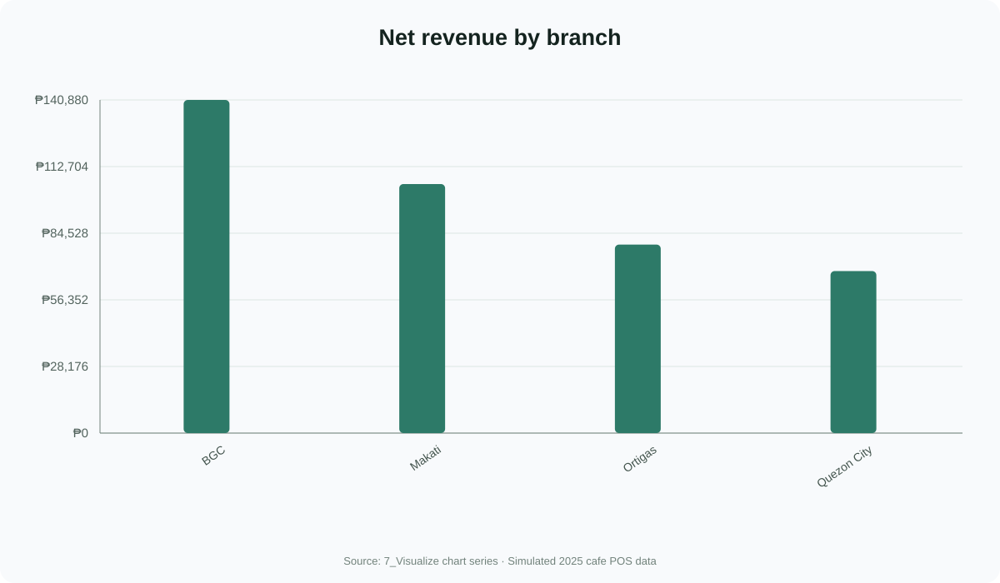
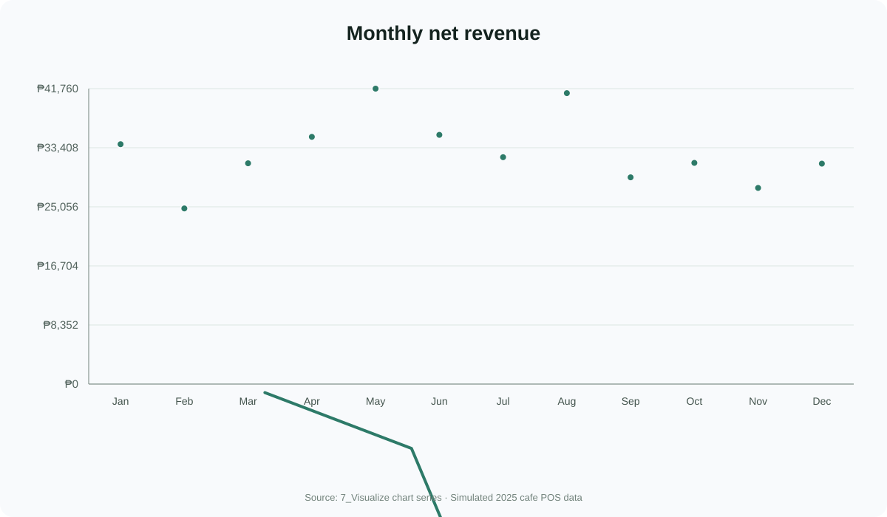
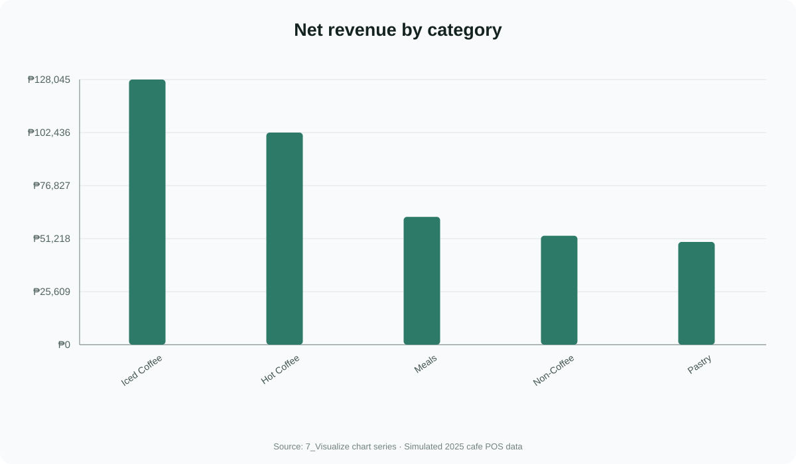
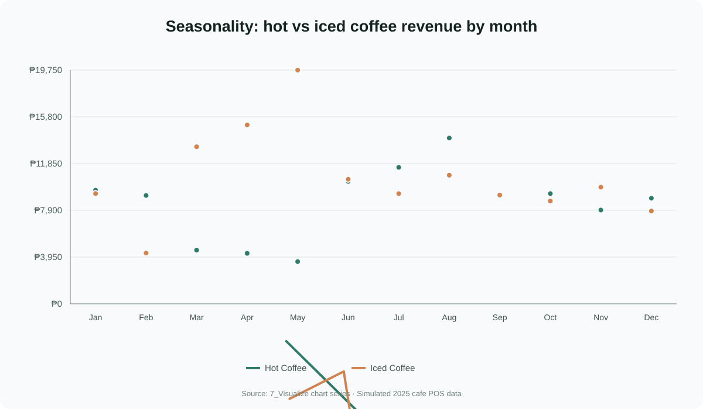
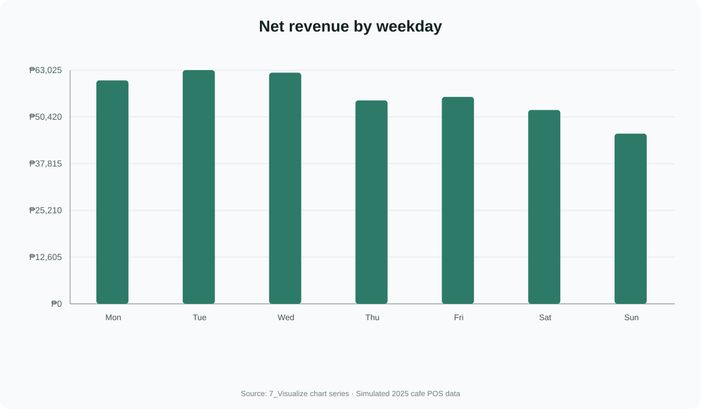
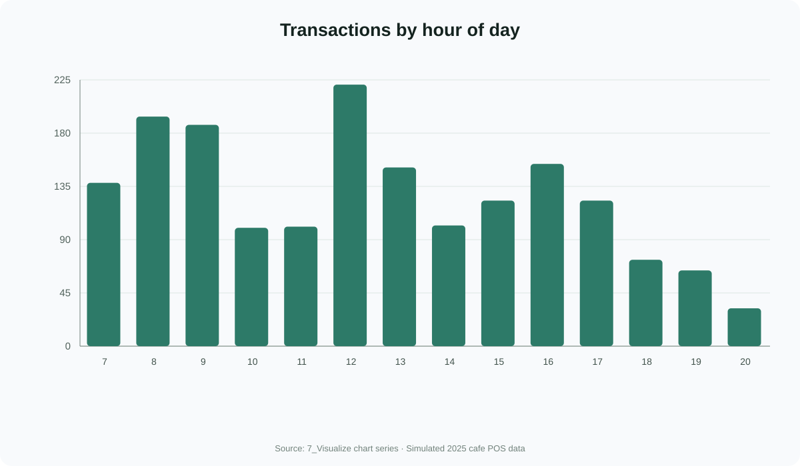
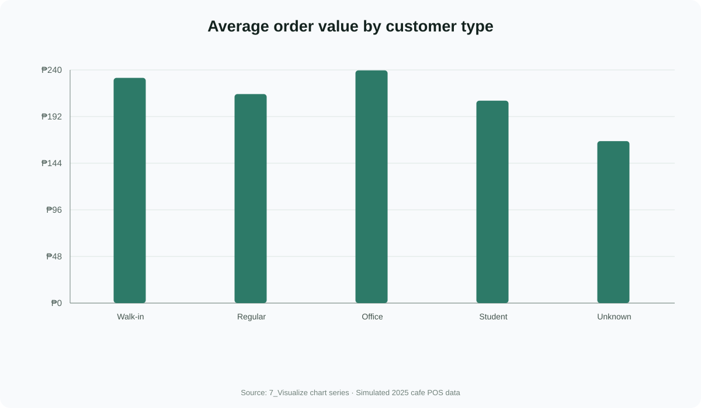
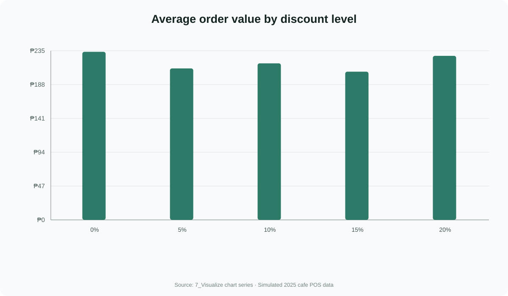

Eight workbook charts
Cafe Sales Analysis
Chart exports rendered from the cached chart series in the workbook's 7_Visualize sheet. The labels and values match the source chart data.
The POS dataset is simulated. These visuals are not actual sales from a real business.







